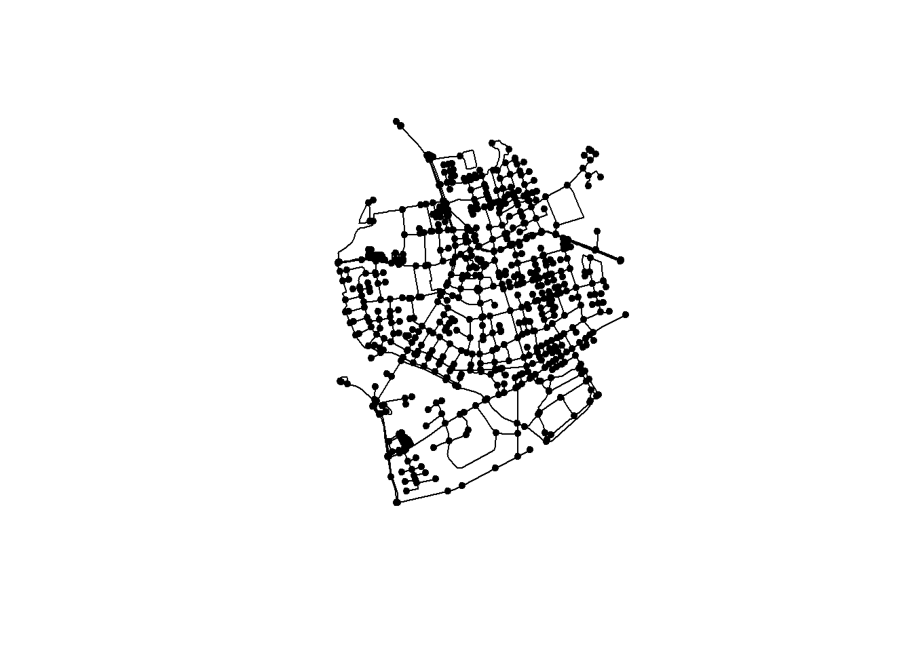
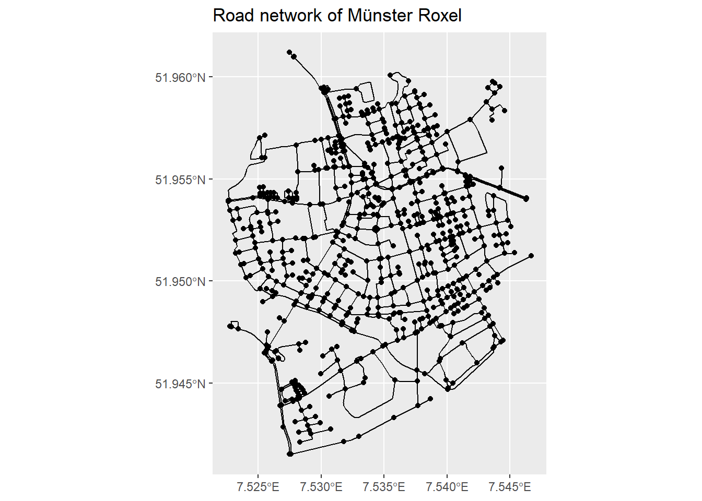
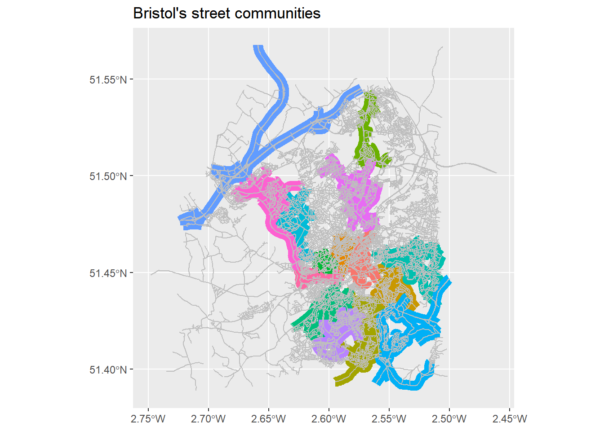
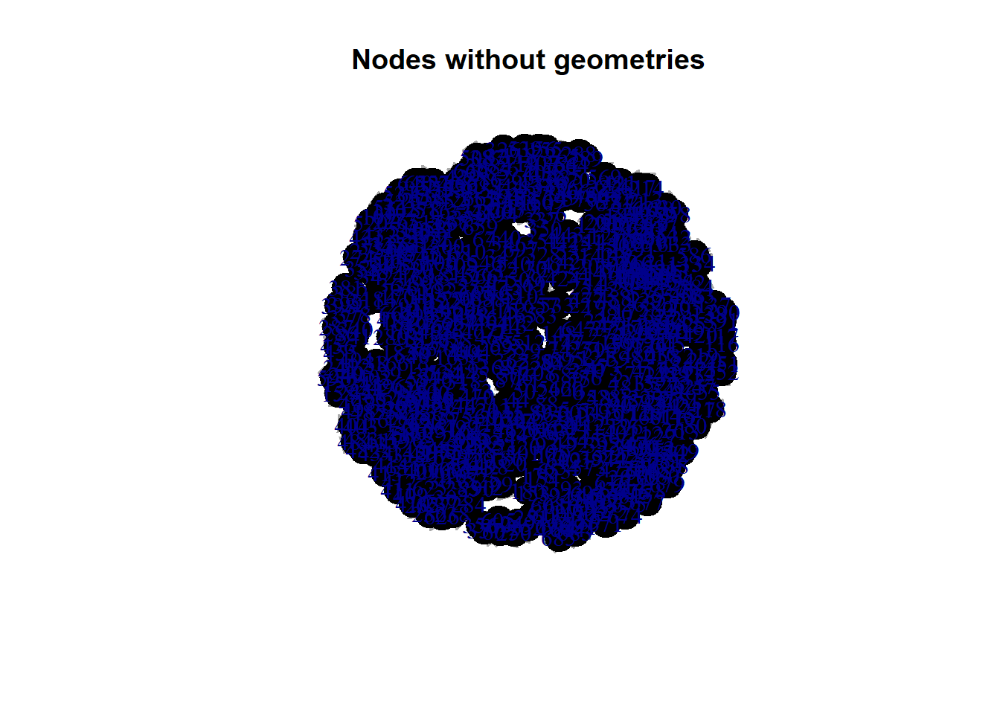

Street network analysis has been central to network science since its nascence: its mathematical foundation, graph theory, was born in the 18th century when Leonhard Euler presented his famous Seven Bridges of Königsberg problem.
Graphs can also have parallel (i.e., multiple) edges between the same two nodes.
network may be thought of as a real-world graph
A complex network is one with a nontrivial topology (the configuration and structure of its nodes and edges) – that is, the topology is neither fully regular nor fully random. Most large real-world networks are complex (Newman, 2010). Of particular interest to this study are complex spatial networks – that is, complex networks with nodes and/or edges embedded in space (O’Sullivan, 2014). A street network is an example of a complex spatial networkwith both nodes and edges embedded in space, as are railways, power grids, and water and sewage networks (Barthélemy, 2011).
street networks are approximately planar
Average street length
Node density
The eccentricity of a node is the maximum of the shortest-path weighted distances between it and each other node in the network
The diameter of a network is the maximum eccentricity of any node in the network and the radius of a network is theminimumeccentricity of any node in the network. The center of a network is the node or set of nodes whose eccentricity equals the radius and the periphery of a network is the node or set of nodeswhose eccentricity equals the diameter
node degree
clustering coefficient
The maximum betweenness centrality in a network specifies the proportion of shortest paths that pass through themost important node/edge. This is an indicator of resilience: networkswith a highmaximumbetweenness centrality aremore prone to failure or inefficiency should this single choke point fail.
Closeness centrality represents, for each node, the reciprocal of the sum of the distance from this node to all others in the network: that is, nodes rank as more central if they are on average closer to all other nodes.
Finally, PageRank – the algorithm Google uses to rank web pages – is a variant of network centrality, namely eigenvector centrality (Brin & Page, 1998). PageRank ranks nodes based on the structure of incoming links and the rank of the source node, andmay also be applied to street networks (Agryzkov, Oliver, Tortosa, & Vicent, 2012; Chin &Wen, 2015)
OpenStreetMap – a collaborative mapping project that provides a free and publicly editable map of the world – has emerged in recent years as a major player both for mapping and for acquiring spatial data (Corcoran, Mooney, & Bertolotto, 2013; Jokar Arsanjani, Zipf, Mooney, & Helbich, 2015). Inspired by Wikipedia’s mass-collaboration model, the project started in 2004 and has grown to over two million users today. Its data quality is generally quite high (Barron, Neis, & Zipf, 2014; Girres & Touya, 2010; Haklay, 2010) and although data coverage varies worldwide, it is generally good when compared to corresponding estimates from the CIA World Factbook (Maron, 2015)
A city’s development eras, design paradigms, underlying terrain, culture, and local economic conditions influence the pattern, topology, and grain of its street networks (Jackson 1985; Kostof 1991). These networks in turn structure the human interactions and transportation processes that run along them, forming an important pillar of city planners’ quest for spatial order (Rose-Redwood and Bigon 2018). In particular, network orientation and geometry have played an outsized role in urban planning since its earliest days (Smith 2007). Measuring these network patterns can help researchers, planners, and community members understand local histories of urban design, transportation planning, and morphology; evaluate existing transportation system patterns and configurations; and explore new infrastructure proposals and alternatives. It also furthers the science of cities by providing a better understanding of urban patterns and how they correspond to evolutionary mechanisms, planning, and design.
The below are based on the very helpful vignettes of the sfnetworks and `` packages. Please make sure to revisit these materials on your own time.
library(sfnetworks) #tidy geospatial networks
Warning: package 'sfnetworks' was built under R version 4.1.3
library(sf) #simple features, spatial data
Warning: package 'sf' was built under R version 4.1.3
library(tidygraph) #tidyverse's version of igraph
Warning: package 'tidygraph' was built under R version 4.1.3
library(tidyverse) #you should know this by now
Warning: package 'tidyverse' was built under R version 4.1.3
Warning: package 'ggplot2' was built under R version 4.1.3
Warning: package 'tibble' was built under R version 4.1.3
Warning: package 'tidyr' was built under R version 4.1.3
Warning: package 'readr' was built under R version 4.1.3
Warning: package 'dplyr' was built under R version 4.1.3
library(igraph) #as above
Warning: package 'igraph' was built under R version 4.1.3
library(osmdata) #access OSM data
Warning: package 'osmdata' was built under R version 4.1.3
Simple feature collection with 3 features and 2 fields
Geometry type: LINESTRING
Dimension: XY
Bounding box: xmin: 7 ymin: 51 xmax: 8 ymax: 52
Geodetic CRS: WGS 84
x from to
1 LINESTRING (7 51, 7 52) city village
2 LINESTRING (7 51, 8 51.5, 8... city farm
3 LINESTRING (8 52, 7 52) farm village
net =sfnetwork(nodes, edges, node_key ="name")
Checking if spatial network structure is valid...
Spatial network structure is valid
net’s edges contain geographical information. So, let’s create an other_net whose edges do not contain geographical information. This could have been a geospatial social network, for example. We know where each node is located in space and then the edges illustrate the existence of a connection between two nodes. To do so, we simply set the st_geometry equal to NULL. The plots below will make these differences clear.
Now, we can convert it to a geospatial network and plot it.
net <-as_sfnetwork(roxel)plot(net)

Instead of plot() we can also use ggplot2 functions. autoplot() does what it says.
autoplot(net) +ggtitle("Road network of Münster Roxel")

We have a network, so let’s do some network analysis.
First thing we need to do is to activate the network component we are interested in. In the below example we want to calculate the betweenness centrality of nodes and, therefore, we need to first activate the nodes.
So, the net object now has a bc column in the node attributes
net = net %>%activate("nodes") %>%mutate(bc =centrality_betweenness())
Warning in betweenness(graph = graph, v = V(graph), directed = directed, :
'nobigint' is deprecated since igraph 1.3 and will be removed in igraph 1.4
net
# A sfnetwork with 701 nodes and 851 edges
#
# CRS: EPSG:4326
#
# A directed multigraph with 14 components with spatially explicit edges
#
# Node Data: 701 x 2 (active)
# Geometry type: POINT
# Dimension: XY
# Bounding box: xmin: 7.522622 ymin: 51.94151 xmax: 7.546705 ymax: 51.9612
geometry bc
<POINT [°]> <dbl>
1 (7.533722 51.95556) 12936.
2 (7.533461 51.95576) 11824
3 (7.532442 51.95422) 11926.
4 (7.53209 51.95328) 7259.
5 (7.532709 51.95209) 5668
6 (7.532869 51.95257) 2374
# ... with 695 more rows
#
# Edge Data: 851 x 5
# Geometry type: LINESTRING
# Dimension: XY
# Bounding box: xmin: 7.522594 ymin: 51.94151 xmax: 7.546705 ymax: 51.9612
from to name type geometry
<int> <int> <chr> <fct> <LINESTRING [°]>
1 1 2 Havixbecker Strasse residential (7.533722 51.95556, 7.533461 51~
2 3 4 Pienersallee secondary (7.532442 51.95422, 7.53236 51.~
3 5 6 Schulte-Bernd-Strasse residential (7.532709 51.95209, 7.532823 51~
# ... with 848 more rows
We can now create a map of this spatial network, the size and the colour of its nodes are based on their betweenness centrality.
Question: Can you interpret betweenness centrality in this context?
If we want to get rid of geometries, all we need to do is to remove the geometry. As per base R, setting something equal to NULL means that we remove it.
net %>%activate("edges") %>%st_set_geometry(NULL) %>%plot(draw_lines = T, main ="Edges without geometries")

net %>%activate("nodes") %>%st_set_geometry(NULL) %>%plot(vertex.color ="black", main ="Nodes without geometries")

OSM
q <-opq(bbox ='greater london uk') %>%add_osm_feature(key ='highway', value ='motorway')x <-opq(bbox ='greater london uk') %>%add_osm_feature(key ='highway', value ='motorway') %>%osmdata_sf()x <-opq(bbox ='greater london uk') %>%add_osm_feature(key ='highway') %>%osmdata_sf()plot(x$osm_points[1])class(x)class(osmdata_sf(q)$osm_lines)class(osmdata_sf(x)$osm_lines)q1 <-opq('Sevilla') %>%add_osm_feature(key ='highway', value ='cycleway')cway_sev <-osmdata_sp(q1)sp::plot(cway_sev$osm_lines)
TO undertand the key and value options, go to OSM’s wiki page